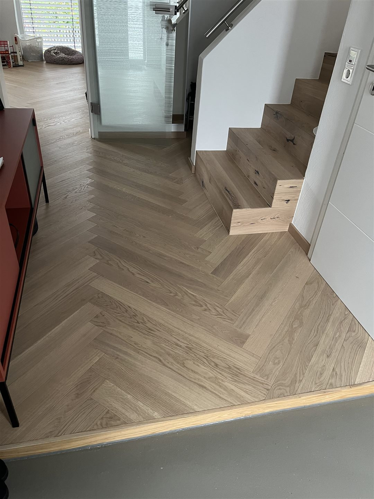
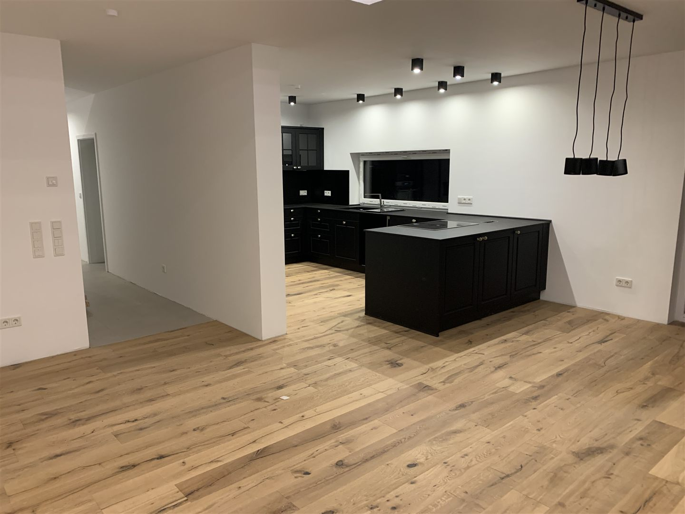
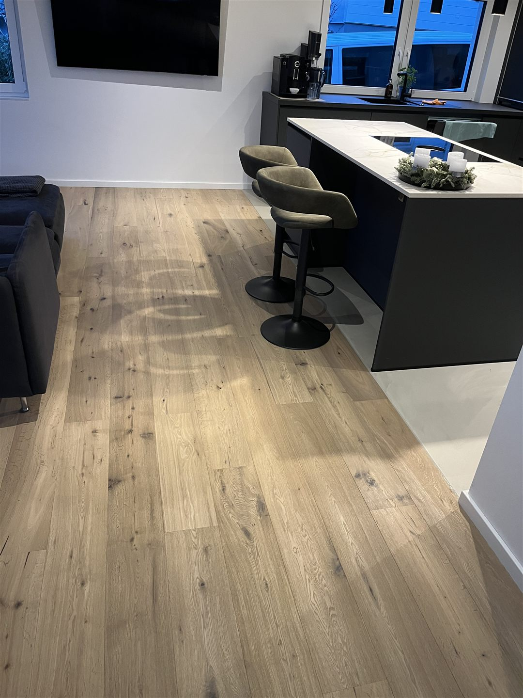
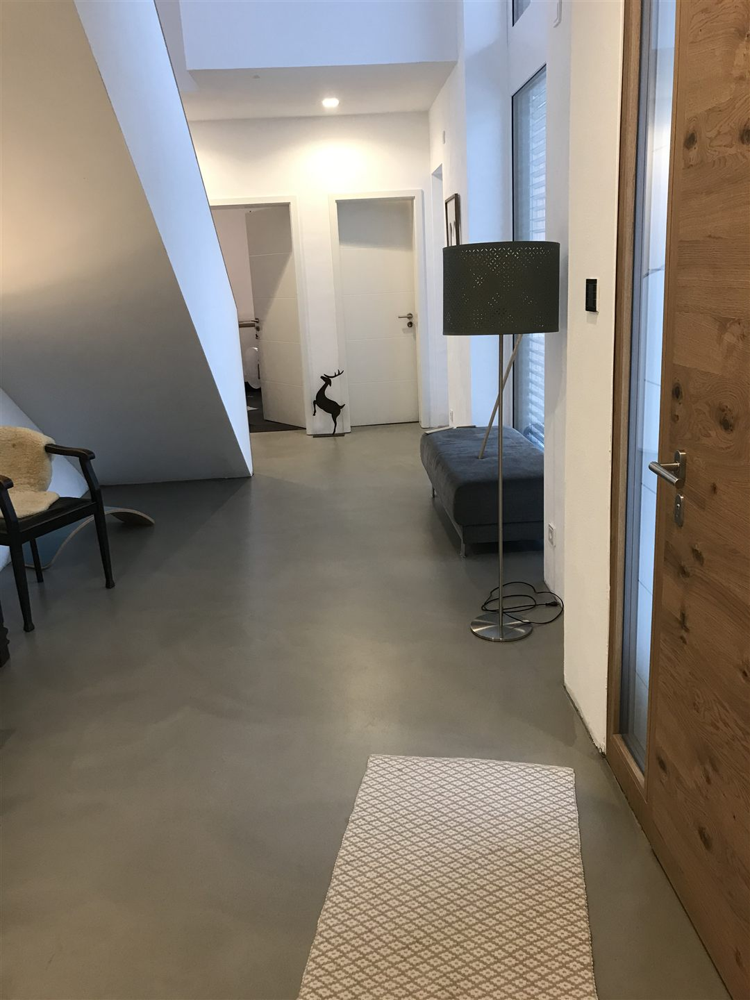
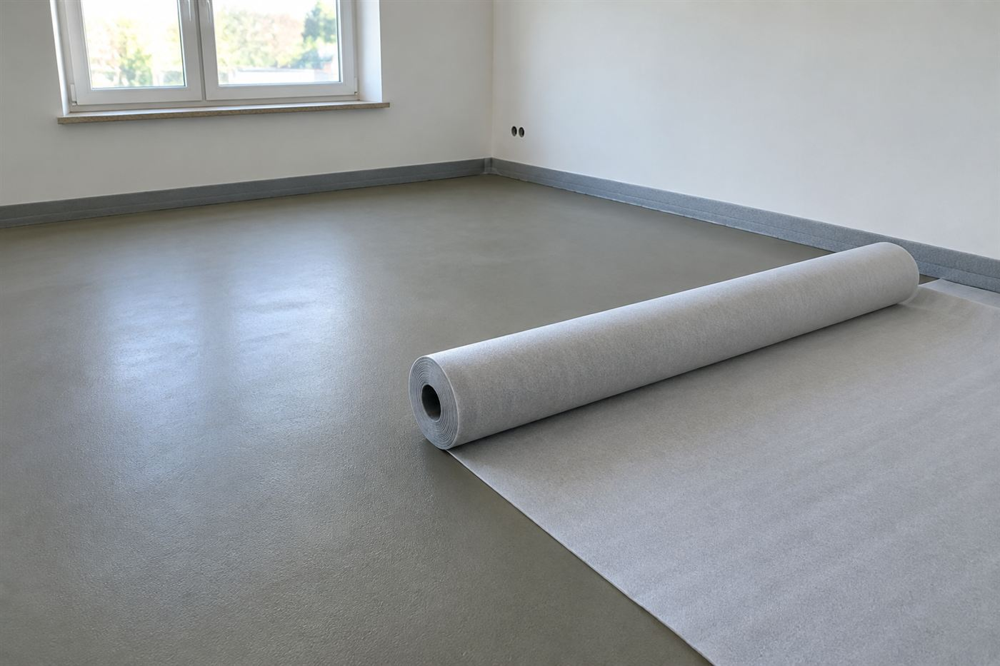
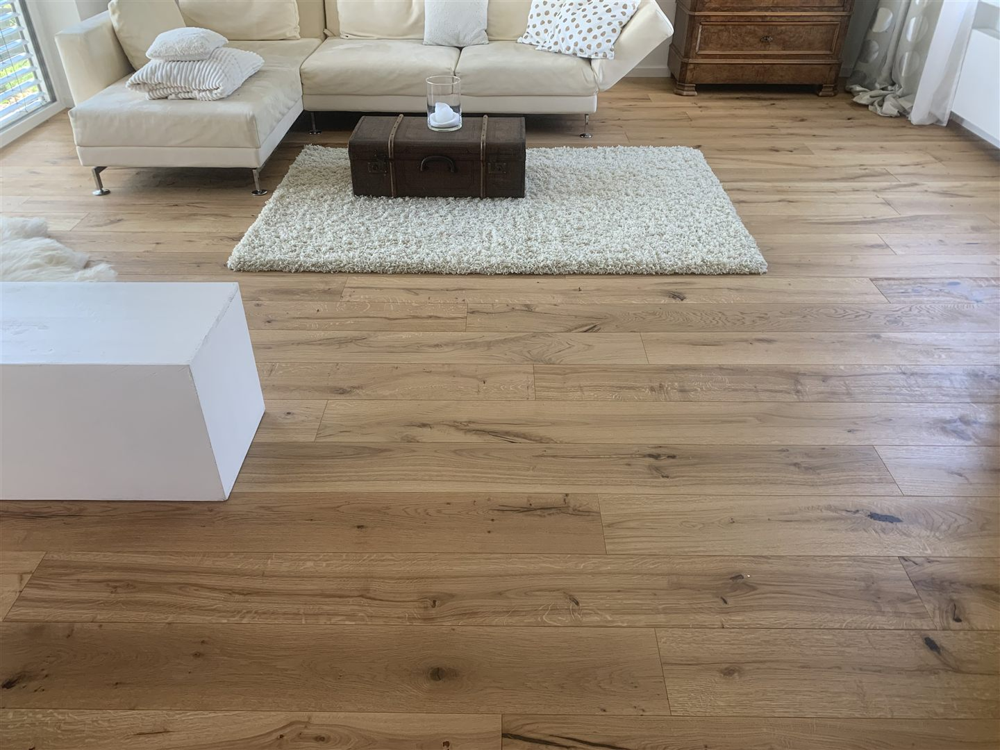
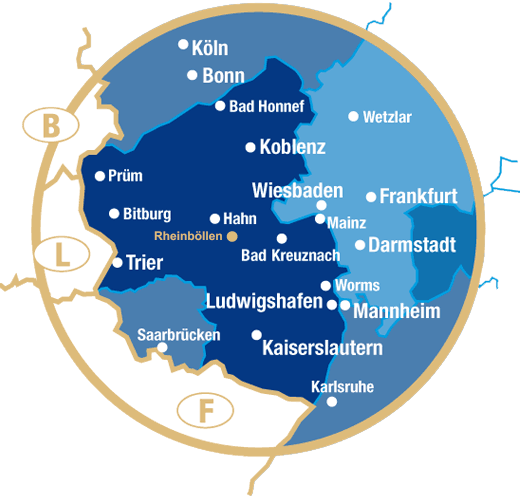

01 / BODENBELÄGERäume, die sich
Räume, die sich
richtig anführen.
Parkett, Laminat, Vinyl und Designböden – fachgerecht verlegt und passend zu Ihrem Raum.
Bodenbelag anfragen
Meisterbetrieb seit 1995 · Rheinböllen & Umgebung
Handverlegte Bodenbeläge, präzise Estricharbeiten und professionelle Bautrocknung – von Ihrem Meisterbetrieb aus Rheinböllen.

01 / Über uns
Die Krebs Fussbodenbau GmbH ist Ihr Meisterbetrieb in Rheinböllen. Seit 1995 verbinden wir Erfahrung im Fussbodenbau mit traditionellem Handwerk und modernen Techniken.
Jeder Raum und jedes Vorhaben ist anders. Von der persönlichen Beratung und Materialauswahl bis zur fachgerechten Verlegung stehen Ihre Wünsche und eine sorgfältige Ausführung im Mittelpunkt.
Lernen wir uns kennenWir hören zu und finden gemeinsam die passende Lösung.
Material und Ausführung auf Ihr Vorhaben abgestimmt.
Sauberes Handwerk bis ins Detail.
Ein Ansprechpartner für Ihre Fragen zum Projekt.
02 / Schicht für Schicht
Vom tragfähigen Untergrund bis zum fertigen Belag: Jede Schicht wird sorgfältig aufgebaut.
Der ebene, belastbare Untergrund, auf dem alles Weitere aufbaut.
Die Dämmschicht sorgt für Ruhe und ein angenehmes Raumklima.
Parkett, Vinyl oder Laminat: sauber verlegt bis in jede Ecke.



03 / Unsere Leistungen
Ob Neubau oder Sanierung: Wir begleiten Ihr Vorhaben vom Untergrund bis zum passenden Bodenbelag.

Parkett, Laminat, Vinyl und Designböden – fachgerecht verlegt und passend zu Ihrem Raum.
Bodenbelag anfragenPräzise Estricharbeiten für Neubau und Sanierung – als Grundlage für Ihren weiteren Bodenaufbau.
Estrich anfragenBautrocknung bei Neubau und nach Wasserschäden.
Mehr erfahrenSchleifmaschinen und Trocknungsgeräte für Ihr Projekt.
Verleih anfragen04 / Einblicke
Einblicke in Bodenprojekte aus unserer bisherigen Galerie. Jedes Bild erzählt von einem anderen Raum und seinen Möglichkeiten.
05 / Einzugsgebiet
Von Rheinböllen aus sind wir für Bodenprojekte in Rheinland-Pfalz und darüber hinaus unterwegs. Unser Einzugsgebiet reicht unter anderem in diese Regionen:

UNSER EINSATZGEBIET06 / Kontakt
Sie haben einen Raum, eine Idee oder eine Frage? Wir freuen uns darauf, von Ihnen zu hören.
Krebs Fussbodenbau GmbH
Am Fischlerbach 29
55494 Rheinböllen
Telefon: 06764 – 3646
E-Mail: info@krebs-fussbodenbau.de
Vertretungsberechtigter Geschäftsführer: [Name]
Umsatzsteuer-ID: [DE xxx]
Hinweis: Die Angaben müssen vervollständigt und an die aktuelle Situation angepasst werden.
Verantwortliche Stelle: Krebs Fussbodenbau GmbH, Am Fischlerbach 29, 55494 Rheinböllen.
Hinweis: Die Datenschutzerklärung muss vervollständigt und an die aktuelle Situation angepasst werden. Wir empfehlen die Prüfung durch eine Rechtsberatung oder Datenschutzfachkraft.